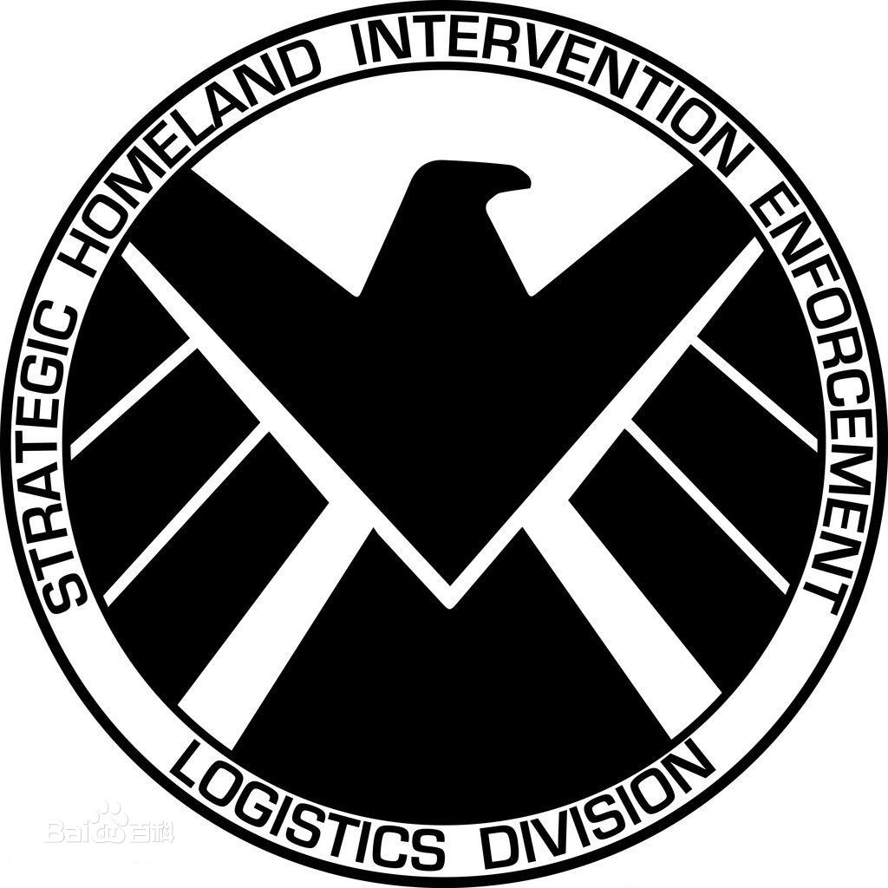

团队名称
神盾局（S.H.I.E.L.D. / Strategic Homeland Intervention, Enforcement and Logistics Division）[1] ，全称为国土战略防御攻击与后勤保障局。是美国漫威漫画 中的组织，首次登场于《奇异故事》第135期（1965年8月），由斯坦·李与杰克·科比联合创造。 神盾局是国际安全理事会专门用于处理各种奇异事件的特殊部队。漫画里前任局长为尼克·弗瑞（Nick Fury），前任指挥官为玛丽亚·希尔（Maria Hill）；电影中前局长为实为九头蛇卧底的亚历山大·皮尔斯（Alexandar Pierce），此后为尼克·弗瑞（Nick Fury）。在《美国队长2》里神盾局被渗透其中的九头蛇破坏而近乎摧毁；此事件后弗瑞命菲尔·科尔森（Phil Coulson）接管神盾局并任局长。而在《神盾局特工第三季》与蜂巢决战后，科尔森自动退居幕后。在《美国队长3》英雄内战事件后，索科维亚协议又将神盾局合法化，新任局长是爱国者杰弗里·梅斯（《神盾局特工第四季》第十集后实际掌门人为菲尔·科尔森），漫画中的第三任美国队长。神盾局组建了由众多超级英雄组成的复仇者联盟。主要对手为远古时期异人创建后来在二战时期由红骷髅用德国纳粹资金组建并延续至今的秘密恐怖组织九头蛇（已被消灭）。